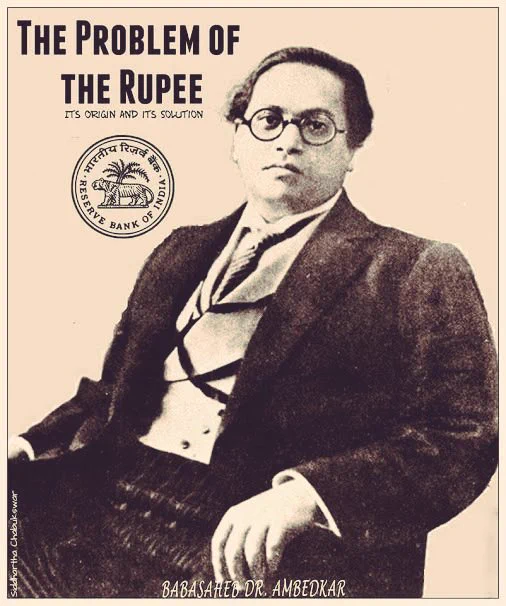

DIGITAL HERITAGE & KNOWLEDGE PLATFORM
Every word he wrote,
held in one archive.
An AI-guided institutional archive for Dr. B. R. Ambedkar's speeches, manuscripts, and constitutional debates — searchable, multilingual, and built for interactive kiosks at the Dr. Ambedkar International Centre.
In Partnership with Dr. AIT
Connecting the Dr. Ambedkar Institute of Technology community with this vast digital heritage to inspire the next generation of engineers and scholars.
समता · न्याय · संविधान
SCROLL TO SPIN